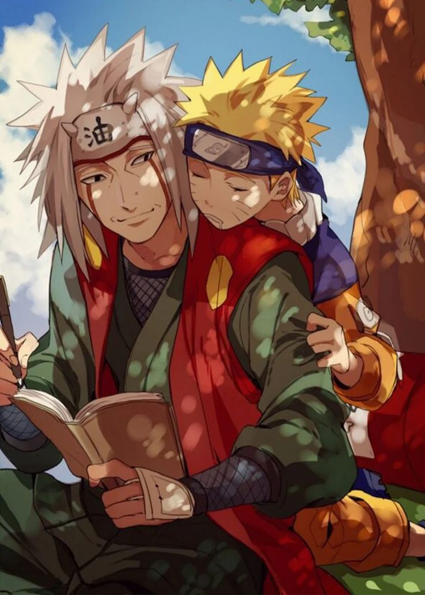
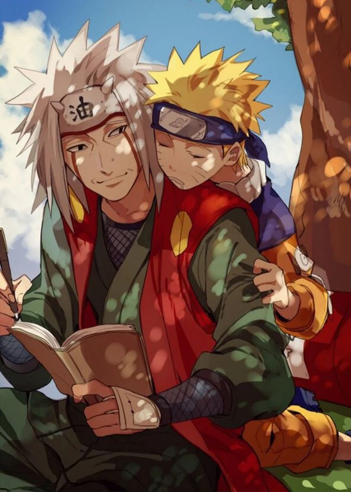
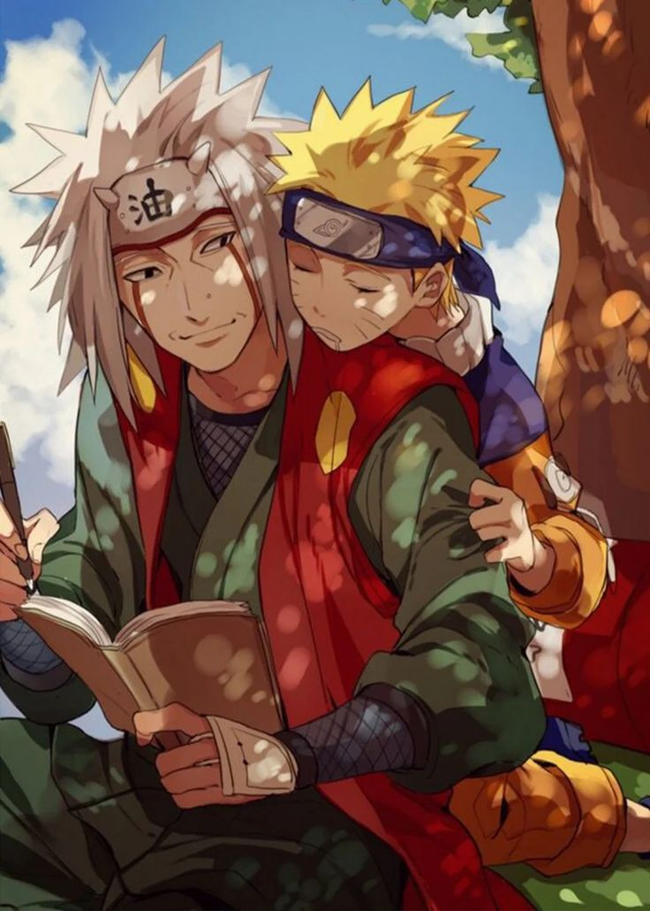

Naruto Uzumaki is the main protagonist of the anime and manga series Naruto, created by Masashi Kishimoto. He is a spirited and determined ninja from the Hidden Leaf Village (Konohagakure) who dreams of becoming the Hokage, the leader of his village, to gain the respect and acknowledgment of his peers.
A powerful fox known as the Nine-Tails attacks Konoha, the hidden leaf village in the Land of Fire, one of the Five Great Shinobi Countries in the Ninja World. In response, the leader of Konoha and the Fourth Hokage, Minato Namikaze, at the cost of his life, seals the fox inside the body of his newborn son, Naruto Uzumaki, making him a host of the beast.[i] The Third Hokage returns from retirement to become the leader of Konoha again. Naruto is often scorned by Konoha's villagers for being the host of the Nine-Tails. Due to a decree by the Third Hokage forbidding any mention of these events, Naruto learns nothing about the Nine-Tails until 12 years later, when Mizuki, a renegade ninja, reveals the truth to him. Naruto defeats Mizuki in combat, earning the respect of his teacher, Iruka Umino.
| Attribute | Details |
|---|---|
| Full Name | Naruto Uzumaki |
| Age | 12-13 (Part 1), 16-17 (Part 2/Shippuden), Adult (Boruto) |
| Birthday | October 10 |
| Clan | Uzumaki Clan |
| Affiliation | Konohagakure (Hidden Leaf Village) |
| Rank | Genin (later becomes Hokage) |
| Nature Types | Wind Release (primary), also gains access to other nature releases |
| Tailed Beast | Kurama (Nine-Tails Fox) |
Naruto is energetic, mischievous, and sometimes reckless. Despite being feared by villagers due to the Nine-Tails inside him, he remains optimistic and determined. His perseverance and ability to inspire others make him a great leader.
Naruto is one of the most influential anime characters, known for his journey from an outcast to the strongest ninja. His story represents perseverance, friendship, and never giving up.
